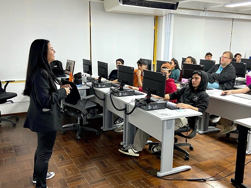

<!-- Utilizado para definir que este documento segue as regras de sintaxe do HTML 5 -->
<!DOCTYPE html>

<!DOCTYPE html>
<html lang="pt-br">

<head>
	<meta charset="UTF-8">
	<meta name="viewport" content="width=device-width, initial-scale=1.0">
	<link rel="stylesheet" type="text/css" href="../css/estilogeral.css" />
	<link rel="stylesheet" type="text/css" href="../css/styletecadm.css" />
	<link rel="shotcut icon" type="image/x-icon" href="../imagens/senac.ico" />
	<title>Téc.Adm</title>
</head>

</html>

<link rel="stylesheet" href="style.css">
<html lang="pt-br">

<body>
	
	<nav id="menu">
		<ul>
			<li><a href="../index.html">Página Inicial</a></li>
			<li><a href="/paginas/Cursos.html">Cursos</a></li>
			<li><a href="/paginas/informacoes.html">Informações</a></li>
			<li><a href="/paginas/faleconosco.html">Fale Conosco</a></li>
		</ul>
	</nav>
	<h1>Um pouco mais sobre nosso Técnico em Administração!</h1>
	<hr>
	<br>
	<p> 
		A formação vai te preparar para desempenhar funções voltadas para a gestão de pessoas, operações
		logísticas,
		gestão de materiais e patrimônio, marketing, vendas, finanças, entre outros.
		Acompanhe a distribuição da carga-horária do currículo:
		<br>
		&bull;Total de horas do curso: 1.000h
		<br>
		&bull;Momentos presenciais*: 844h
		<br>
		&bull;Momentos mediados por tecnologias com tutoria ativa**: 156h (no formato EAD - Educação a
		Distância)
		<br>
		Ao final da formação você estará apto a atuar em empresas de diversos segmentos, além de poder
		participar de
		concursos em organizações públicas.
		<hr>
	<h1>&bull;Diferenciais</h1>
	O Senac-RS é uma das maiores instituições de ensino do país. Nos mais de 70 anos de atuação, já
	capacitou mais
	de 7 milhões de gaúchos. A instituição tem como diferencial o Projeto Integrador, que é uma unidade
	curricular
	de natureza diferenciada, baseada na metodologia de ação-reflexão-ação, que se constitui na
	proposição
	de
	situações desafiadoras a serem resolvidas pelo aluno. O curso Técnico em Administração tem como
	diferencial os
	docentes com formação superior na área e experiência profissional. As aulas são ministradas com foco
	nas
	habilidades práticas e desenvolvimento profissional.
	</p>

	<br>
	<br>
	<br>
	<hr>
	<br>
	
	<h1>&bull; Mercado De Trabalho</h1>
	A área de Administração está inserida em todos os segmentos de negócios. Com este curso técnico,
	você
	poderá
	atuar em empresas de diversos portes, efetuar estágio e concorrer a um cargo público por meio de um
	concurso.
	<br>
	<br>
	<hr>
	<h1>&bull; Metodologia</h1>
	Aprendizagem que oportuniza a autonomia do estudante no desenvolvimento de competências, as quais
	são
	entendidas
	como ação profissional observável, articulando conhecimentos, habilidades, atitudes e que, ainda,
	permite o
	desenvolvimento contínuo em atividades do mercado de trabalho.

</body>

</html>